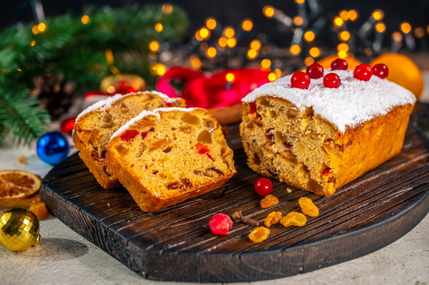

Рецепт ароматної випічки, запах якої розноситься по всій оселі: як приготувати різдвяний кекс
Новорічний пиріг без винятку виходить м’яким, пишним та ароматним
Передсвятковий сезон до Різдва 25 грудня (за григоріанським календарем) вже розпочався, тому настав час запасатися цікавими рецептами святкових страв, щоб порадувати як своїх рідних, так і гостей.
Уявити собі святковий стіл без ароматної та смачної випічки дуже важко."Телеграф" пропонує приготувати своїм читачам на Різдво та й інші свята, святковий ванільний пиріг (кекс) з родзинками за рецептом українського шеф-кухаря Євгена Клопотенка.
Як приготувати ванільний кекс з родзинками
Інгредієнти:
- 150 г кукурудзяного борошна
- 200 г пшеничного борошна (+ 4 ст. л. для дріжджів)
- 200 мл молока
- 25 г свіжих дріжджів
- 1 ч. л. ванільного цукру
- 125 г цукрового піску
- 1 яйце
- 50 мл олії
- 1 апельсин
- 100 г родзинок
- 30 мл рому або коньяку
- 1 щіпка солі
- цукрова пудра за смаком
- волоські горіхи за смаком
Приготування:
- Готуємо опару — дріжджову основу для кексу. Вливаємо в миску молоко кімнатної температури. До нього кришимо свіжі дріжджі. Всипаємо дві столові ложки цукру. Перемішуємо і додаємо 4 столові ложки пшеничного борошна. Перемішуємо та залишаємо в теплому місці на 20 хвилин.
- Родзинки заливаємо ромом або коньяком.
- У глибоку миску всипаємо кукурудзяне і пшеничне борошно. Перемішуємо та додаємо залишок цукру, який ми не використовували для опари. Потім всипаємо 1 чайну ложку ванільного цукру і додаємо щіпку солі. Наприкінці вливаємо трохи олії і вбиваємо 1 яйце.
- Наприкінці до тіста додаємо опару. Замішуємо тісто (повинно вийти дуже м’яким та однорідним). Накриваємо його кухонним рушником і залишаємо на 1 годину в теплому місці.
- Потім тісто обімніть і додайте до нього замочені родзинки. Також натираємо цедру одного апельсина. Вимішуємо тісто так, щоб родзинки та цедра рівномірно розподілилися.
- Форму для випікання змащуємо олією і викладаємо туди тісто. Залишаємо на пів години, щоб тісто ще трохи підросло. Потім відправляємо до духовки, розігрітої до 180 градусів, на 35–40 хвилин.
Якщо вам не зрозуміло текстове пояснення, ви можете переглянути відео .